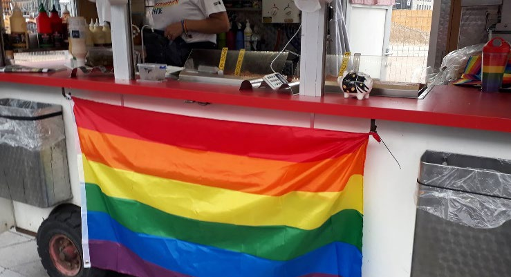
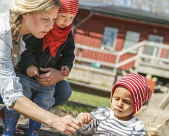

6.13 – FAMILIE OG FAMILIELIV
sidde 229
Familien har undergået store forandringer i Danmark gennem de seneste hund rede år. Især siden 1960’erne er familierne blevet påvirket af nye kulturelle strømninger og samlivsformer.
Hvor familien – kernefamilien – tidligere stort set altid bestod af en mand og en kvinde, der var gift, og deres børn, er der i dag andre familietyper: ugifte samlevende par med eller uden børn, par af samme køn, der er gift eller lever i registrerede partnerskaber, enlige med børn og enlige uden børn.
Ægteskabet mellem mand og kvinde er stadig den mest almindelige samlivsform og udgjorde 73 procent af alle samboende par i 2026. Men andelen af personer, der gifter sig, er faldet markant gennem årene. For eksempel var 88 procent af alle 30-årige kvinder i 1970 gift, hvorimod andelen i 2026 kun var 31 procent. Samtidig er både mænd og kvinder ældre end tidligere, når de gifter sig første gang.
Det er imidlertid ikke ensbetydende med, at de venter med at danne par. Siden 1970’erne har det været almin deligt, især blandt yngre mennesker, at par bor sammen, selv om de ikke er gift. Par, der bor sammen uden at være gift (”papirløse ægteskaber”), har dog ikke automatisk de samme juridiske og økonomiske forpligtelser over for hinanden som ægtepar.
I Danmark tilstræbes det, at homo seksuelle har de samme rettigheder og pligter som alle andre borgere. Sådan har det dog ikke altid været. Frem til 1933 kunne seksuelle rela tioner mellem personer af samme køn straffes med bøde eller fængsel. Og først i 1981 blev homoseksualitet fjernet fra Sundhedsstyrelsens offi cielle liste over psykiske sygdomme. Men i 1989 blev Danmark det første land i verden, der gav to personer af samme køn ret til at indgå et regi streret partnerskab, der har stort set de samme retsvirkninger som et ægteskab. Personer af samme køn har siden 2012 kunnet indgå ægteskab, herunder også blive gift i folkekirken. Holland indførte i 2001 som det første land i verden denne rettighed. Siden 2010 har to personer af samme køn også haft mulighed for at adoptere.Forældre med en barnevogn
Regnbueflaget som er et symbol på mangfoldighed og LGBT+-personers ligestilling.
Læremateriale Til Indfødsretsprøven

sidde 230
Det er også blevet mere almindeligt end tidligere, at voksne bor alene. Antallet af enlige voksne over 18 år er steget kraftigt. I 2024 lever 55 procent af alle voksne som enlige, det vil sige, at de hverken er gift eller bor sammen med en partner. Den stigende andel af voksne, der lever alene, skal blandt andet ses i sammenhæng med, at det er blevet mere almindeligt at blive skilt, men det er også påvirket af det stigende antal ældre, hvor den ene part i ægteskabet er død.
Det danske samfund hviler på respekten for det enkelte menneske. Dette betyder, at mænd og kvinder har samme rettigheder i det politiske og det økonomiske liv og i familielivet med hensyn til retten til at stifte familie, blive skilt og så videre. Også børn har rettigheder, selv om de er under myndighedsalderen. Myndighedsalderen er i Danmark 18 år. For eksempel må børn under 13 år ikke arbejde uden for hjemmet.
Forældre må ikke slå deres børn. Børn, der udsættes for vold af deres forældre, eller som på anden måde behandles dårligt, kan blive tvangs fjernet af myndighederne og sat i pleje hos en anden familie. Når børnene bliver 18 år og dermed myndige, kan de frit vælge, hvordan de vil leve deres liv og med hvem. Dette betyder blandt andet, at de kan indgå ægteskab.
En mand og en kvinde, der ønsker at gifte sig, kan indgå ægteskab i Danmark under visse betingelser. Blandt andet skal begge have lovligt ophold i Danmark og være fyldt 18 år. Ægteskaber i Danmark kan kun indgås på frivilligt grundlag. Det er derfor strafbart at forsøge at tvinge nogen til at indgå i et ægteskab, som de ikke selv ønsker.
En ægtefælle, hvad enten det er kvinden eller manden, som ikke ønsker at fort sætte ægteskabet, har ret til at få separation i seks måneder og derefter ret til skilsmisse. Hvis parret er enige om at ville skilles, kan de få skilsmisse straks. Er de ikke enige, har en ægtefælle ret til skilsmisse straks, når der foreligger særlige forhold, for eksempel utroskab eller vold.
I et ægteskab har moderen og faderen fælles forældremyndighed over deres fælles børn. Efter en skilsmisse fortsætter forældrene med at have fælles forældremyndighed over børnene.
Hvis forældrene går fra hinanden, afgør de selv, hvordan de vil dele ansvaret for deres fælles børn. Ønsker en forælder forældremyndigheden alene, er det retten, der afgør, om den fælles forældremyndighed skal fortsætte. Eller om en af forældrene skal have forældremyndigheden alene. Mange børn bor på skift hos begge forældre og får nye forældre (”papforældre”) og søskende, hvis forældrene gifter sig eller flytter sammen med en ny partner.
Læremateriale Til Indfødsretsprøven

Fonte: Læremateriale til Indfødsretsprøven, SIRI.